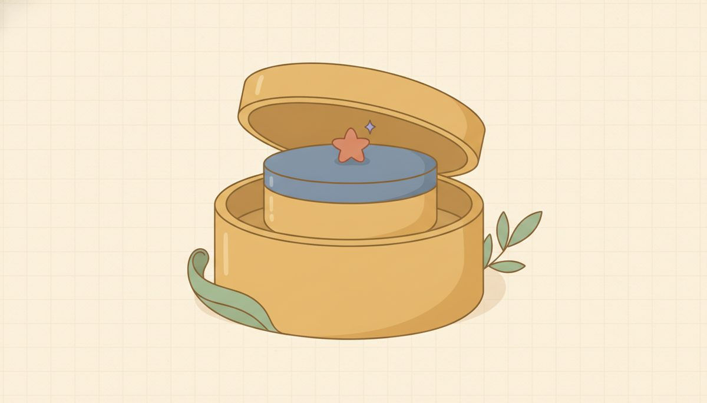
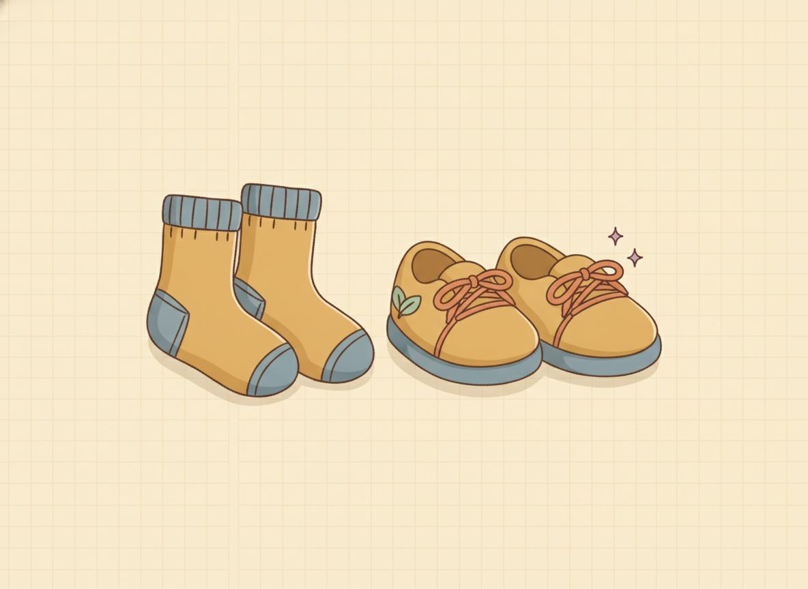

Two-step equations

Most equations that come up in real life take two moves, not one. There's nothing new to learn here, though. A two-step equation is just two of the one-step moves from 2.1, done in a row. The only fresh idea is which one to undo first, and an everyday picture settles that.
Think about getting dressed. You put your socks on first, then your shoes. To get undressed you reverse that, taking the shoes off first, then the socks.

Building 2x + 3 from x works the same way: you multiply by 2 (the sock), then add 3 (the shoe). So to get back to x, undo the last thing first. Take off the shoe by subtracting 3, then take off the sock by dividing by 2. That's why you strip away the +3 before you touch the ×2: it's the outermost layer.
Here's that in symbols, with the check built in, so you can see each layer come off: $$2x+3=11 \;\xrightarrow{\,-3\,}\; 2x=8 \;\xrightarrow{\,\div 2\,}\; x=4 \qquad \text{Check: } 2(4)+3=11$$ First subtract 3 from both sides; the +3 goes to zero and the equation reads 2x = 8. Now you're back to a one-step equation, the kind you've just been solving. Divide both sides by 2; the 2 in front goes to one and x = 4. Then check it in the original: 2(4) + 3 is 8 + 3, which is 11, matching the right side.
Read each step and ask why it follows from the one above before you go on.
New words
none new. This is two one-step moves in sequence.
Worked example
2.2.w1 Multiply-then-add: $$2x+3=11 \;\xrightarrow{\,-3\,}\; 2x=8 \;\xrightarrow{\,\div 2\,}\; x=4 \qquad \text{Check: } 2(4)+3=8+3=11$$
2.2.w2 Division type: $$\frac{x}{3}-2=4 \;\xrightarrow{\,+2\,}\; \frac{x}{3}=6 \;\xrightarrow{\,\times 3\,}\; x=18 \qquad \text{Check: } \frac{18}{3}-2=6-2=4$$
2.2.w3 Dividing by a negative: $$8-2x=14 \;\xrightarrow{\,-8\,}\; -2x=6 \;\xrightarrow{\,\div(-2)\,}\; x=-3 \qquad \text{Check: } 8-2(-3)=8+6=14$$
That third one is worth slowing down for, because it's where a sign quietly goes missing. After you subtract 8, the left side is −2x, not 2x. The minus belongs to the term. So you divide both sides by −2, and 6 ÷ (−2) is −3.
The check is where a slip would have shown up: 8 − 2(−3) means subtracting a negative, which adds, giving 8 + 6 = 14. A negative answer here isn't a warning sign. It's a real point on the line, and the check confirms it.
2.2.w4 Here's a clean one to get the rhythm back before you practice. The answer comes out to 0, which surprises people, but zero balances the scale just fine: $$3x+6=6 \;\xrightarrow{\,-6\,}\; 3x=0 \;\xrightarrow{\,\div 3\,}\; x=0 \qquad \text{Check: } 3(0)+6=6$$
One slip is easy to make on the very first move, now that the layers are stacked: undoing in the wrong order. On 2x + 3 = 11, dividing by 2 before subtracting the 3 forces you to divide the 3 as well, which drags in a fraction and makes the numbers messy. The getting-dressed picture is the fix. Whatever went on last comes off first, so the +3 goes before the ×2.
Check yourself
- 2.2.c1 Solve 3x + 4 = 19, and say why you subtracted before dividing. (Subtract 4 first because it's the outer layer: 3x = 15, then divide by 3 to get x = 5. Check: 3(5) + 4 = 19.)
- 2.2.c2 What would change if it were 2x − 5 = 13 instead of 2x + 5 = 13? (You'd add 5 instead of subtracting it, since the 5 is now subtracted: 2x = 18, so x = 9. Check: 2(9) − 5 = 13.)
- 2.2.c3 In 10 = 4x − 2, the variable's on the right. Does that break anything? (No. Balance works both directions; 10 = 4x − 2 is the same as 4x − 2 = 10, so add 2 then divide by 4 to get x = 3.)
You can now solve a two-step equation by undoing the outer layer first, then the inner one, and checking the answer, even when it lands on a negative or on zero.
The practice below mixes the problem types, so you have to spot which layer to undo first each time.
Multiply-then-add:
Reveal answer to problem 1
4Reveal answer to problem 2
5Reveal answer to problem 3
5Reveal answer to problem 4
4Multiply-then-subtract:
Reveal answer to problem 5
5Reveal answer to problem 6
4Reveal answer to problem 7
5Reveal answer to problem 8
4Division type:
Reveal answer to problem 9
10Reveal answer to problem 10
12Reveal answer to problem 11
12Reveal answer to problem 12
10Flipped format (don't assume x is on the left):